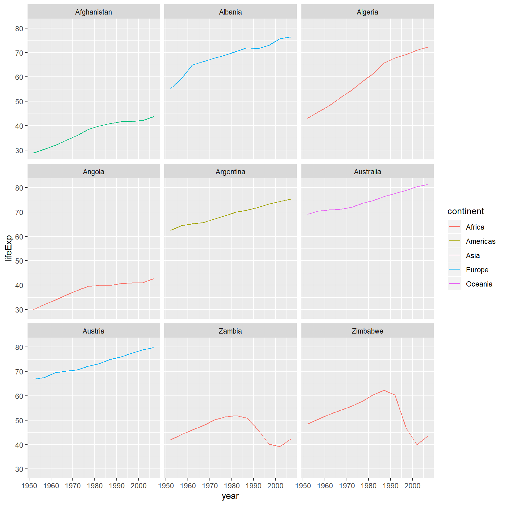

0.1 Layers
0.2 Transformations and statistics
0.3 Multi-panel figures
0.4 Modifying text
0.5 Exporting the plot
0.6 The readr package
Bringing data into R is one of the first places where new users encounter difficulties.
Parsed with column specification:
cols(
country = col_character(),
year = col_double(),
pop = col_double(),
continent = col_character(),
lifeExp = col_double(),
gdpPercap = col_double()
)# A tibble: 1,704 x 6
country year pop continent lifeExp gdpPercap
<chr> <dbl> <dbl> <chr> <dbl> <dbl>
1 Afghanistan 1952 8425333 Asia 28.8 779.
2 Afghanistan 1957 9240934 Asia 30.3 821.
3 Afghanistan 1962 10267083 Asia 32.0 853.
4 Afghanistan 1967 11537966 Asia 34.0 836.
5 Afghanistan 1972 13079460 Asia 36.1 740.
6 Afghanistan 1977 14880372 Asia 38.4 786.
7 Afghanistan 1982 12881816 Asia 39.9 978.
8 Afghanistan 1987 13867957 Asia 40.8 852.
9 Afghanistan 1992 16317921 Asia 41.7 649.
10 Afghanistan 1997 22227415 Asia 41.8 635.
# ... with 1,694 more rowsManipulation of dataframes means many things to many researchers, we often select certain observations (rows) or variables (columns), we often group the data by a certain variable(s), or we even calculate summary statistics. We can do this operations using the normal base R operations:
[1] 7215.327The question here is how might you take averages (or any other summary statistic) by some group you might be interested in.
0.7 The dplyr package
Luckily, the dplyr
package provides a number of very useful functions for manipulating dataframes
in a way that will reduce the above repetition, reduce the probability of making
errors, and probably even save you some typing. As an added bonus, you might
even find the dplyr grammar easier to read.
Here we’re going to cover 5 of the most commonly used functions as well as using
pipes (%>%) to combine them.
select()filter()group_by()summarize()mutate()
If you have have not installed this package earlier, please do so:
Now let’s load the package:
0.8 Using select()
If, for example, we wanted to move forward with only a few of the variables in
our dataframe we could use the select() function. This will keep only the
variables you select.

0.9 Using filter()
To select on some subset of rows:
# A tibble: 360 x 6
country year pop continent lifeExp gdpPercap
<chr> <dbl> <dbl> <chr> <dbl> <dbl>
1 Albania 1952 1282697 Europe 55.2 1601.
2 Albania 1957 1476505 Europe 59.3 1942.
3 Albania 1962 1728137 Europe 64.8 2313.
4 Albania 1967 1984060 Europe 66.2 2760.
5 Albania 1972 2263554 Europe 67.7 3313.
6 Albania 1977 2509048 Europe 68.9 3533.
7 Albania 1982 2780097 Europe 70.4 3631.
8 Albania 1987 3075321 Europe 72 3739.
9 Albania 1992 3326498 Europe 71.6 2497.
10 Albania 1997 3428038 Europe 73.0 3193.
# ... with 350 more rowsIf we open up year_country_gdp we’ll see that it only contains the year,
country and gdpPercap. Above we used ‘normal’ grammar, but the strengths of
dplyr lie in combining several functions using pipes. I’ve found this useful:
## https://twitter.com/WeAreRLadies/status/1172576445794803713 by https://twitter.com/Shel_Kariuki
I work up %>%
showered %>%
dressed %>%
had coffee %>%
came to R workshopSince the pipes grammar is unlike anything we’ve seen in R before, let’s repeat what we’ve done above using pipes.
To help you understand why we wrote that in that way, let’s walk through it step
by step. First we summon the gapminder dataframe and pass it on, using the pipe
symbol %>%, to the next step, which is the select() function. In this case
we don’t specify which data object we use in the select() function since in
gets that from the previous pipe. Fun Fact: There is a good chance you have
encountered pipes before in the shell. In R, a pipe symbol is %>% while in the
shell it is | but the concept is the same!
0.10 Using filter() with pipes
If we now wanted to move forward with the above, but only with European
countries, we can combine select and filter
year_country_gdp_euro <- gapminder %>%
filter(continent == "Europe") %>%
select(year, country, gdpPercap)0.10 Challenge 1
Write a single command (which can span multiple lines and includes pipes) that will produce a dataframe that has the African values for
lifeExp,countryandyear, but not for other Continents. How many rows does your dataframe have and why?0.10 Solution to Challenge 1
As with last time, first we pass the gapminder dataframe to the filter()
function, then we pass the filtered version of the gapminder dataframe to the
select() function. Note: The order of operations is very important in this
case. If we used ‘select’ first, filter would not be able to find the variable
continent since we would have removed it in the previous step.
0.11 Using group_by() and summarize()
Now, we were supposed to be reducing the error prone repetitiveness of what can
be done with base R, but up to now we haven’t done that since we would have to
repeat the above for each continent. Instead of filter(), which will only pass
observations that meet your criteria (in the above: continent=="Europe"), we
can use group_by(), which will essentially use every unique criteria that you
could have used in filter.
# A tibble: 1,704 x 6
country year pop continent lifeExp gdpPercap
<chr> <dbl> <dbl> <chr> <dbl> <dbl>
1 Afghanistan 1952 8425333 Asia 28.8 779.
2 Afghanistan 1957 9240934 Asia 30.3 821.
3 Afghanistan 1962 10267083 Asia 32.0 853.
4 Afghanistan 1967 11537966 Asia 34.0 836.
5 Afghanistan 1972 13079460 Asia 36.1 740.
6 Afghanistan 1977 14880372 Asia 38.4 786.
7 Afghanistan 1982 12881816 Asia 39.9 978.
8 Afghanistan 1987 13867957 Asia 40.8 852.
9 Afghanistan 1992 16317921 Asia 41.7 649.
10 Afghanistan 1997 22227415 Asia 41.8 635.
# ... with 1,694 more rows# A tibble: 1,704 x 6
# Groups: continent [5]
country year pop continent lifeExp gdpPercap
<chr> <dbl> <dbl> <chr> <dbl> <dbl>
1 Afghanistan 1952 8425333 Asia 28.8 779.
2 Afghanistan 1957 9240934 Asia 30.3 821.
3 Afghanistan 1962 10267083 Asia 32.0 853.
4 Afghanistan 1967 11537966 Asia 34.0 836.
5 Afghanistan 1972 13079460 Asia 36.1 740.
6 Afghanistan 1977 14880372 Asia 38.4 786.
7 Afghanistan 1982 12881816 Asia 39.9 978.
8 Afghanistan 1987 13867957 Asia 40.8 852.
9 Afghanistan 1992 16317921 Asia 41.7 649.
10 Afghanistan 1997 22227415 Asia 41.8 635.
# ... with 1,694 more rowsYou will notice that the structure of the dataframe where we used group_by()
(grouped_df) is not the same as the original gapminder (data.frame). A
grouped_df can be thought of as a list where each item in the listis a
data.frame which contains only the rows that correspond to the a particular
value continent (at least in the example above).

0.12 Using summarize()
The above was a bit on the uneventful side but group_by() is much more
exciting in conjunction with summarize(). This will allow us to create new
variable(s) by using functions that repeat for each of the continent-specific
data frames. That is to say, using the group_by() function, we split our
original dataframe into multiple pieces, then we can run functions
(e.g. mean() or sd()) within summarize().
gdp_bycontinents <- gapminder %>%
group_by(continent) %>%
summarize(mean_gdpPercap = mean(gdpPercap))
continent mean_gdpPercap
<fctr> <dbl>
1 Africa 2193.755
2 Americas 7136.110
3 Asia 7902.150
4 Europe 14469.476
5 Oceania 18621.609That allowed us to calculate the mean gdpPercap for each continent, but it gets even better.
0.12 Challenge 2
Calculate the average life expectancy per country. Which has the longest average life expectancy and which has the shortest average life expectancy?
0.12 Solution to Challenge 2
lifeExp_bycountry <- gapminder %>% group_by(country) %>% summarize(mean_lifeExp = mean(lifeExp)) lifeExp_bycountry %>% filter(mean_lifeExp == min(mean_lifeExp) | mean_lifeExp == max(mean_lifeExp))# A tibble: 2 x 2 country mean_lifeExp <chr> <dbl> 1 Iceland 76.5 2 Sierra Leone 36.8Another way to do this is to use the
dplyrfunctionarrange(), which arranges the rows in a data frame according to the order of one or more variables from the data frame. It has similar syntax to other functions from thedplyrpackage. You can usedesc()insidearrange()to sort in descending order.# A tibble: 1 x 2 country mean_lifeExp <chr> <dbl> 1 Sierra Leone 36.8# A tibble: 1 x 2 country mean_lifeExp <chr> <dbl> 1 Iceland 76.5
The function group_by() allows us to group by multiple variables. Let’s group by year and continent.
gdp_bycontinents_byyear <- gapminder %>%
group_by(continent, year) %>%
summarize(mean_gdpPercap = mean(gdpPercap))That is already quite powerful, but it gets even better! You’re not limited to defining 1 new variable in summarize().
0.13 count() and n()
A very common operation is to count the number of observations for each
group. The dplyr package comes with two related functions that help with this.
For instance, if we wanted to check the number of countries included in the
dataset for the year 2002, we can use the count() function. It takes the name
of one or more columns that contain the groups we are interested in, and we can
optionally sort the results in descending order by adding sort=TRUE:
# A tibble: 5 x 2
continent n
<chr> <int>
1 Africa 52
2 Asia 33
3 Europe 30
4 Americas 25
5 Oceania 2If we need to use the number of observations in calculations, the n() function
is useful. It will return the total number of observations in the current group rather than counting the number of observations in each group within a specific column. For instance, if we wanted to get the standard error of the life expectency per continent:
# A tibble: 5 x 2
continent se_le
<chr> <dbl>
1 Africa 0.366
2 Americas 0.540
3 Asia 0.596
4 Europe 0.286
5 Oceania 0.775You can also chain together several summary operations; in this case calculating the minimum, maximum, mean and se of each continent’s per-country life-expectancy:
gapminder %>%
group_by(continent) %>%
summarize(
mean_le = mean(lifeExp),
min_le = min(lifeExp),
max_le = max(lifeExp),
se_le = sd(lifeExp)/sqrt(n()))# A tibble: 5 x 5
continent mean_le min_le max_le se_le
<chr> <dbl> <dbl> <dbl> <dbl>
1 Africa 48.9 23.6 76.4 0.366
2 Americas 64.7 37.6 80.7 0.540
3 Asia 60.1 28.8 82.6 0.596
4 Europe 71.9 43.6 81.8 0.286
5 Oceania 74.3 69.1 81.2 0.7750.14 Using mutate()
We can also create new variables prior to (or even after) summarizing information using mutate().
gdp_pop_bycontinents_byyear <- gapminder %>%
mutate(gdp_billion = gdpPercap*pop/10^9) %>%
group_by(continent,year) %>%
summarize(mean_gdpPercap = mean(gdpPercap),
sd_gdpPercap = sd(gdpPercap),
mean_pop = mean(pop),
sd_pop = sd(pop),
mean_gdp_billion = mean(gdp_billion),
sd_gdp_billion = sd(gdp_billion))0.15 Connect mutate with logical filtering: ifelse
When creating new variables, we can hook this with a logical condition. A simple combination of
mutate() and ifelse() facilitates filtering right where it is needed: in the moment of creating something new.
This easy-to-read statement is a fast and powerful way of discarding certain data (even though the overall dimension
of the data frame will not change) or for updating values depending on this given condition.
## keeping all data but "filtering" after a certain condition
# calculate GDP only for people with a life expectation above 25
gdp_pop_bycontinents_byyear_above25 <- gapminder %>%
mutate(gdp_billion = ifelse(lifeExp > 25, gdpPercap * pop / 10^9, NA)) %>%
group_by(continent, year) %>%
summarize(mean_gdpPercap = mean(gdpPercap),
sd_gdpPercap = sd(gdpPercap),
mean_pop = mean(pop),
sd_pop = sd(pop),
mean_gdp_billion = mean(gdp_billion),
sd_gdp_billion = sd(gdp_billion))
## updating only if certain condition is fullfilled
# for life expectations above 40 years, the gpd to be expected in the future is scaled
gdp_future_bycontinents_byyear_high_lifeExp <- gapminder %>%
mutate(gdp_futureExpectation = ifelse(lifeExp > 40, gdpPercap * 1.5, gdpPercap)) %>%
group_by(continent, year) %>%
summarize(mean_gdpPercap = mean(gdpPercap),
mean_gdpPercap_expected = mean(gdp_futureExpectation))0.16 Combining dplyr and ggplot2
First install and load ggplot2:
In the plotting lesson we looked at how to make a multi-panel figure by adding
a layer of facet panels using ggplot2. Here is the code we used (with some
extra comments):
# Get the start letter of each country
starts.with <- substr(gapminder$country, start = 1, stop = 1)
# Filter countries that start with "A" or "Z"
az.countries <- gapminder[starts.with %in% c("A", "Z"), ]
# Make the plot
ggplot(data = az.countries, aes(x = year, y = lifeExp, color = continent)) +
geom_line() + facet_wrap( ~ country)
This code makes the right plot but it also creates some variables (starts.with
and az.countries) that we might not have any other uses for. Just as we used
%>% to pipe data along a chain of dplyr functions we can use it to pass data
to ggplot(). Because %>% replaces the first argument in a function we don’t
need to specify the data = argument in the ggplot() function. By combining
dplyr and ggplot2 functions we can make the same figure without creating any
new variables or modifying the data.
gapminder %>%
# Get the start letter of each country
mutate(startsWith = substr(country, start = 1, stop = 1)) %>%
# Filter countries that start with "A" or "Z"
filter(startsWith %in% c("A", "Z")) %>%
# Make the plot
ggplot(aes(x = year, y = lifeExp, color = continent)) +
geom_line() +
facet_wrap( ~ country)
Using dplyr functions also helps us simplify things, for example we could
combine the first two steps:
gapminder %>%
# Filter countries that start with "A" or "Z"
filter(substr(country, start = 1, stop = 1) %in% c("A", "Z")) %>%
# Make the plot
ggplot(aes(x = year, y = lifeExp, color = continent)) +
geom_line() +
facet_wrap( ~ country)
0.16 Advanced Challenge
Calculate the average life expectancy in 2002 of 2 randomly selected countries for each continent. Then arrange the continent names in reverse order. Hint: Use the
dplyrfunctionsarrange()andsample_n(), they have similar syntax to other dplyr functions.0.16 Solution to Advanced Challenge